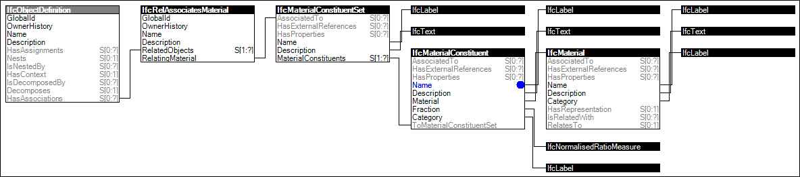

Link to this page
Link to this pageMaterial constituents are associated with products or product types where materials are placed arbitrarily (unlike 1D material profiles or 2D material layers). The mapping of materials to geometry may be accomplished using IfcShapeAspect.
Figure 28 illustrates an instance diagram.
 |
Figure 28 — Material Constituents |